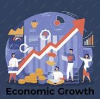

Pambansang Kaunlaran
Pambansang Kaunlaran — Isang kalagayan ng bansa kung saan ang mga mamamayan ay nakararanas ng pagbuti ng ekonomiya, pamumuhay, at kalidad ng buhay.
Mga Konsepto ng Kaunlaran
- Pagbabago – Proseso ng pag-iiba o pag-unlad sa lipunan at ekonomiya.
- Pag-unlad – Pag-angat mula sa mababang antas tungo sa mas mataas na kalidad ng pamumuhay.
- Pagsulong – Pag-usad tungo sa mga layunin at pagpapahusay ng kakayahan at kaalaman.
- Ebolusyon – Mabagal ngunit tuloy-tuloy na pagbabago sa loob ng mahabang panahon.
Dalawang Konsepto ng Pag-unlad (Todaro & Smith)
- Tradisyunal – Pagtaas ng income per capita o kita ng bawat mamamayan.
- Makabago – Malawakang pagbabago sa sistemang panlipunan at pagpapabuti ng kalidad ng buhay.
Mga Salik ng Pag-unlad ng Ekonomiya
- Likas na Yaman
- Yamang-tao
- Kapital
- Teknolohiya at Inobasyon
Mga Palatandaan ng Kaunlaran
- Maayos na sistemang panlipunan
- Pagkakaroon ng trabaho at sapat na kita
- Sapat na serbisyong panlipunan
- Katarungang panlipunan
Sukatan ng Kaunlaran
- GDP at GNP
- Human Development Index (HDI) – sumusukat sa kalusugan, edukasyon, at pamumuhay.
Gampanin ng Mamamayan
- Pagsunod sa batas
- Pagbabayad ng buwis
- Pagtangkilik sa produktong Pilipino
- Pakikilahok sa mga gawaing pangkomunidad
- Responsableng pagboto
